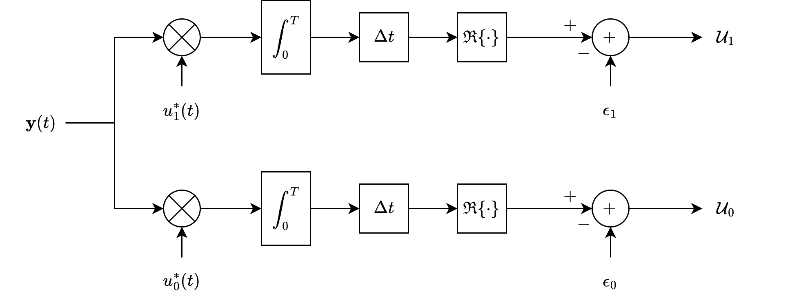

Continuous Signals with White Gaussian Noise#
White Gaussian Noise is a fundamental noise model used due to its mathematical tractability and its approximation of many real-world noise sources.
If the signal \( \mathbf{y}(t) \) is changing very rapidly, then it will be difficult or impossible to sample it at a high enough rate to build a digital receiver.
In this case, we cannot adequately represent \( \mathbf{y}(t) \) by \( k \) samples during a time interval \( T \).
Signal and Noise Model#
The received signal at time \( t \) can be expressed as
where
\(\alpha\): Amplitude scaling factor. In most of the chapter, it’s assumed to be \( 1 \) for simplicity.
\(u_j(t)\): The deterministic signal under hypothesis \( H_j \).
\(e^{-j \beta}\): A phase shift applied to the signal \( u_j(t) \). Here, \( \beta \) is the phase angle. Again, for simplicity, it’s often set to \( 0 \).
\(\mathbf{z}(t)\): The noise process added to the signal. It is a zero-mean complex white Gaussian noise process.
For most analyses, the parameters are simplified by setting \( \alpha = 1 \) and \( \beta = 0 \). This leads to:
Sampling the Received Signal#
Discrete Representation:
Sampling Times: Consider sampling the continuous signal \( \mathbf{y}(t) \) at \( k \) uniformly distributed times over the interval \( T \).
where \( t_j = j \Delta t \)
where
Locally Generated Signal:
Local local (reference): For each hypothesis \( H_i \), a locally generated signal vector is defined as:
where \( u_i^*(t_j) \) is the complex conjugate of \( u_i(t_j) \), and \( \sigma^2 \) is the noise variance.
Correlation: The received signal \( \vec{\mathbf{y}} \) is correlated with the locally generated signal \( \vec{u}_i^* \). This correlation measures how well the received signal matches the expected signal under each hypothesis.
Discussion. If locally generated (known) signals are known, is detection essential?
It might seem counterintuitive to perform detection when you already have a locally generated signal (often referred to as a local (reference) or reference signal) that you can correlate with the received signal.
the received signal \( \mathbf{y}(t) \) under hypothesis \( H_i \) is modeled as:
Where: \( u_i(t) \) is the known expected signal under hypothesis \( H_i \) (e.g., \( H_0 \): no signal, \( H_1 \): signal present).
The locally generated signal \( u_i(t) \) is a reference or local (reference) signal that your receiver uses to correlate with the incoming signal \( y(t) \).
It’s “locally generated” because it’s produced within the receiver based on prior knowledge or expectations about the transmitted signal.
Even though you have a locally generated signal \( u_i(t) \), the received signal \( y(t) \) is corrupted by noise \( \mathbf{z}(t) \).
This noise can distort the received signal, making it challenging to determine whether the received signal corresponds to \( H_0 \) or \( H_1 \).
Example: QAM modulation
The locally generated signal in a receiver for QAM modulation is typically one of the QAM constellation points (i.e., the possible transmitted symbols).
In a QAM system, the transmitter modulates data by selecting one of the symbols from the QAM constellation (e.g., 4-QAM, 16-QAM, 64-QAM). The receiver’s job is to identify which symbol was transmitted based on the noisy received signal. To do this, it uses locally generated versions of the QAM symbols as reference signals for detection.
Decision Variable \( U_i \)#
Decision Criterion: For each hypothesis \( H_i \), compute \( U_i \) as the real part of the inner product between \( y(t) \) and \( u_i(t) \), subtracting half the energy of \( u_i(t) \). Choose the hypothesis with the larger \( U_i \).
The decision variable \( U_i \) quantifies the likelihood of the received signal corresponding to hypothesis \( H_i \).
The goal is to choose the hypothesis with the larger \( U_i \).
Discrete Decision Variable:
where:
\( \mathbf{y}_j = \mathbf{y}(t_j) \) is the sampled received signal at time \( t_j \).
\( u_{i,j} = u_i(t_j) \) is the \( j \)-th sample of the locally generated signal under hypothesis \( H_i \).
\( \Re \{\cdot\} \) denotes the real part.
Correlation Term:
This term measures the alignment between the received signal \( y_j \) and the local (reference) signal \( u_{i,j} \).
Bias Term:
This term adjusts for the energy present in the local (reference), preventing favoring hypotheses with higher energy signals irrespective of the actual received signal.
A higher \( U_i \) suggests a better match between the received signal and the local (reference) for \( H_i \).
Transitioning to the Continuous Domain#
Recall that \(\mathbf{y}_j\) and \(u_{i,j}\) are functions of time.
Multiplying by \( \Delta t \) scales the discrete sums to approximate integrals over the continuous interval \( T \).
Since \( \Delta t \) is a positive scalar common to all \( U_i \), it doesn’t affect the relative comparison between \( U_0 \) and \( U_1 \).
The decision rule remains based on which \( U_i \) is larger.
Continuous Decision Variable:
Consider the limit as the number of samples \( k \) approaches infinity, and the sampling interval \( \Delta t \) approaches zero, while maintaining \( k \Delta t \approx T \).
We aim to convert the Summation to Integration.
In this limit, the discrete sums in \( U_i \) transition to continuous integrals.
Simplified Decision Variable \( U_i \)#
In the \(U_i\) above, we have
Continuous Correlation: Represents the inner product (correlation) between the received continuous-time signal \( y(t) \) and the conjugate of the local (reference) signal \( u_i(t) \).
Continuous Energy Term: Represents the energy of the \( i \)-th signal over the interval \( T \). Energy is a fundamental measure in signal processing, quantifying the signal’s power over time.
Continuous Decision Variable:
Balancing Correlation: Subtracting the energy term ensures that the decision metric accounts for both the alignment (correlation) with the local (reference) and the inherent energy of the local (reference).
Neglecting Noise Variance: The term involving \( \sigma^2 \) can be neglected in the continuous domain because multiplying both sides of the decision rule by \( \sigma^2 \) (a positive scalar) does not affect the outcome of the comparison between \( U_0 \) and \( U_1 \).
Matched Filter Structure#
A matched filter is designed to maximize the signal-to-noise ratio (SNR). So, we consider it as an optimal detector.
Impulse Response of the Matched Filter:
The matched filter’s impulse response is the complex conjugate of the local (reference) signal \( u_i(t) \) time-reversed.
Filtering Operation: The matched filter effectively performs the integral \( \int_0^T y(t) u_i^*(T - t) \, dt \), which aligns with the continuous decision variable \( U_i \).
Optimal Detection: By passing \( y(t) \) through the matched filter, the output directly corresponds to the correlation term in \( U_i \), facilitating optimal detection based on the derived decision rule.
Summary of the Detection Process#
Signal Representation: The received signal \( y(t) \) is a combination of the true signal \( u_i(t) \) under hypothesis \( H_i \) and white Gaussian noise \( z(t) \).
Sampling: Due to the rapid variation of \( y(t) \), sampling at a high rate is impractical. Instead, consider the continuous-time model.
Decision Variable Formation:
Compute \( U_i \) by correlating \( y(t) \) with \( u_i(t) \) and adjusting for the energy of \( u_i(t) \).
Use a matched filter with impulse response \( h_i^*(t) = u_i^*(T - t) \) to perform the correlation efficiently in hardware or software.
Optimal Detector: The hypothesis \( H_i \) with the larger \( U_i \) is chosen as the detected hypothesis.
Final Decision Rule:
\[ U_1 > U_0 \quad \Rightarrow \quad \text{Decide } H_1 \]\[ U_0 > U_1 \quad \Rightarrow \quad \text{Decide } H_0 \]
Likelihood Function#
Next, we discuss the representation and probability density function (PDF) of a received continuous-time signal in the presence of white Gaussian noise.
The goal is to derive a likelihood function that characterizes the probability of observing a particular signal given different hypotheses about the transmitted signal.
Noise Characteristics#
The noise follows a Gaussian distribution, fully characterized by its mean (zero in this case) and its autocorrelation function.
White Noise: The noise is “white” because its autocorrelation is a delta function, implying no correlation between noise values at different times.
Essentially, noise samples at different times are independent.
White Noise Power Spectral Density
where
\(\mathbf{z}^*(t)\): The complex conjugate of the noise process at time \( t \).
\(\mathbf{z}(t + \tau)\): The noise process at time \( t + \tau \).
\(N_0\): Represents the noise power spectral density.
\(\delta(\tau)\): The Dirac delta function, which is zero everywhere except at \( \tau = 0 \), where it is infinite such that its integral over all \( \tau \) is 1.
\(2 N_0 \delta(\tau)\): The autocorrelation function of the noise.
Transition from Discrete to Continuous Noise#
As the sampling interval \( \Delta t \) becomes very small (i.e., moving towards continuous time), the product \( \sigma_z^2 \Delta t \) approaches \( 2 N_0 \). This bridges the discrete-time noise variance with the continuous-time noise power spectral density.
where
\(\sigma_z^2\): Variance of the discrete-time noise samples.
\(\Delta t\): Sampling interval (time between consecutive samples).
\(2 N_0\): As defined earlier, relates to the continuous-time noise autocorrelation.
This relationship is crucial for transitioning from discrete signal representations (used in digital signal processing) to continuous-time representations (used in theoretical analyses).
Simplifying with White Noise Covariance#
The Covariance matrix of the noise is
where \(\mathbf{I}\) is \( k \times k \) identity matrix.
\( \mathbf{M} \) is a diagonal covariance matrix.
Since \( \mathbf{M} \) is proportional to the identity matrix, the noise components are uncorrelated and have equal variance.
This simplifies the PDF significantly because \( \mathbf{M}^{-1} \) becomes \( \frac{2}{\sigma_z^2} \mathbf{I} \), and \( \det(\mathbf{M}) = \left( \frac{\sigma_z^2}{2} \right)^k \).
Probability Density Function (PDF) Under Hypotheses#
The noise has zero mean, hence the mean of \( \vec{y} \) under \( H_i \) is \( \vec{u}_i \).
The PDF assumes the noise is Gaussian, making the distribution of \( \vec{y} \) under each hypothesis also Gaussian.
Discrete-Time PDF
The PDF of the received discrete-time signal vector \( \vec{y} \) under hypothesis \( H_i \), \(p_i(\vec{y})\), is expressed as
where
\((2 \pi)^k \det(\mathbf{M})\): The normalization factor ensuring the PDF integrates to 1. Here:
\(k\): Number of discrete samples.
\(\det(\mathbf{M})\): Determinant of the covariance matrix \( \mathbf{M} \).
\(\exp\left(-\frac{1}{2} [\vec{y} - \vec{u}_i]^T \mathbf{M}^{-1} [\vec{y}^* - \vec{u}_i^*]\right)\): The exponential term representing the Gaussian distribution, where:
\(\vec{y} - \vec{u}_i\): The deviation of the received signal from the expected signal under hypothesis \( H_i \).
\(\mathbf{M}^{-1}\): Inverse of the covariance matrix, indicating how deviations are weighted.
Substituting known components into the PDF
We have
Determinant and Inverse:
\(\det(\mathbf{M}) = \left( \frac{\sigma_z^2}{2} \right)^k\)
\(\mathbf{M}^{-1} = \frac{2}{\sigma_z^2} \mathbf{I}\)
Normalization Factor:
Exponent Simplification:
Substituting back into the exponent:
Since the noise is white and the covariance matrix is diagonal, the joint PDF \( p_i(\vec{y}) \) is the product of individual Gaussian PDFs for each sample \( y_j \):
The Final Simplified PDF:
The sum \( \sum_{j=1}^{k} |y_j - u_{i,j}|^2 \) represents the squared Euclidean distance (energy) between the received vector \( \vec{y} \) and the expected signal \( \vec{u}_i \).
Transition to Continuous-Time Likelihood Function#
Next, we aim to obtain a likelihood function \( p_i(y(t)) \), representing the probability of observing the continuous-time signal \( y(t) \) given hypothesis \( H_i \).
Multiplying Numerator and Denominator Inside the Exponential by \( \Delta t \), we have
Given that \( \sigma_z^2 \Delta t \rightarrow 2 N_0 \) as \( \Delta t \rightarrow 0 \), we can substitute:
Taking the Limit:
As \( \Delta t \rightarrow 0 \), the number of samples \( k \rightarrow \infty \), but the total duration \( k \Delta t = T \) remains constant.
Sum Approaches Integral:
Resulting Continuous-Time PDF:
where \( K \) is a constant that encompasses all factors outside the exponential function in the PDF, including normalization constants from the limit process.
The integral \( \int_0^T |y(t) - u_i(t)|^2 \, dt \) quantifies the energy (squared error) between the received signal and the expected signal under \( H_i \).
Signals that closely match \( u_i(t) \) (i.e., lower energy) have higher likelihood under hypothesis \( H_i \).
Discussion. Role of the Constant \( K \)
Ill-Defined Nature:
In the limit as \( \Delta t \rightarrow 0 \), certain constants may become undefined or infinitely large/small, making \( K \) not easily expressible in closed form.
Irrelevance in Certain Analyses:
Likelihood Ratios: When comparing two hypotheses using a likelihood ratio \( \frac{p_1(y(t))}{p_0(y(t))} \), the constant \( K \) cancels out if it doesn’t depend on the hypotheses \( H_i \).
Therefore, \( K \) is unnecessary for decision-making based on likelihood ratios.
Parameter Estimation (Cramér-Rao Bounds): When estimating parameters within \( u_i(t) \), the natural logarithm of the PDF is taken. Since \( K \) is constant and doesn’t depend on the parameters, its derivative with respect to the parameters is zero, rendering it irrelevant for calculating bounds.
Practical Use: While \( K \) is part of the formal PDF expression, in practical applications like designing receivers or performing statistical tests, only the relative differences in the exponential terms matter. Hence, \( K \) can often be ignored.
Decision Making#
Optimal Receiver Structure#
Matched Filter Implementation:
Local weighted vector: \( h_i^*(t) = u_i^*(T - t) \)
Correlates the received signal \( y(t) \) with the expected signal \( u_i(t) \), maximizing the signal-to-noise ratio (SNR).
The output of the matched filter directly relates to the integral \( \int_0^T y(t) u_i^*(t) \, dt \), aligning with the decision variable \( U_i \) in the likelihood function.
Likelihood Ratio Test#
The likelihood ratio statistic is
Decision Rule:
Decide \( H_1 \) if \( \Lambda(y(t)) > \eta \), where \( \eta \) is a threshold determined by the desired false alarm rate.
Since \( K \) cancels out:
Log-Likelihood Radio Test
Taking natural logarithm simplifies comparison to:
The following figure shows a functional block diagram of this continuous-time correlation receiver structure.

Example: Decision Making in QAM Demodulation#
We consider the detection process in 4-QAM (Quadrature Amplitude Modulation).
Overview of 4-QAM#
4-QAM is a modulation scheme that conveys data by changing (modulating) the amplitude of two carrier waves, typically sine and cosine, which are orthogonal to each other.
This results in a constellation of four distinct complex symbols, each representing a unique pair of bits.
Constellation Diagram
The 4-QAM constellation typically consists of four points arranged in a square or rectangular pattern on the complex plane.
Each point corresponds to a unique combination of in-phase (I) and quadrature (Q) components.
Example Constellation:
Symbol |
I (In-Phase) |
Q (Quadrature) |
Bit Pair |
|---|---|---|---|
\( s_0 \) |
\( +1 \) |
\( +1 \) |
00 |
\( s_1 \) |
\( -1 \) |
\( +1 \) |
01 |
\( s_2 \) |
\( -1 \) |
\( -1 \) |
11 |
\( s_3 \) |
\( +1 \) |
\( -1 \) |
10 |
Detection Process in 4-QAM#
Objective of Detection
Given a received signal \( y(t) \) corrupted by noise, the goal is to determine which of the four possible transmitted symbols \( s_0, s_1, s_2, s_3 \) was sent.
Matched Filtering and Correlation
Matched Filtering is to maximize the signal-to-noise ratio (SNR) at the receiver.
In the context of QAM:
Matched Filters for I and Q Components:
Separate the received signal into its In-Phase (I) and Quadrature (Q) components.
Apply matched filters corresponding to the sine and cosine carriers to extract these components.
Correlation with Known Symbols:
Each received component (I and Q) is correlated with the expected amplitudes of the transmitted symbols.
For 4-QAM, since there are four possible symbols, this involves correlating with the four known complex constellation points.
Decision Metric#
The most straightforward decision rule is the Maximum Likelihood (ML) Detection, which, under Gaussian noise assumptions, equates to minimum Euclidean distance between the received signal and the constellation points.
Mathematically:
Where:
\( \hat{s} \) is the detected symbol.
\( y(t) \) is the received signal.
\( s_i \) are the four constellation points.
Equivalently:
where \( \Re\{\cdot\} \) and \( \Im\{\cdot\} \) denote the real and imaginary parts, respectively.
While theoretically, you could correlate with all four symbols, practical implementations often exploit the structure of the QAM constellation to simplify detection, for example:
If \( \Re\{y(t)\} > 0 \) and \( \Im\{y(t)\} > 0 \), decide \( s_0 \) (00).
If \( \Re\{y(t)\} < 0 \) and \( \Im\{y(t)\} > 0 \), decide \( s_1 \) (01).
And so on for \( s_2 \) and \( s_3 \).